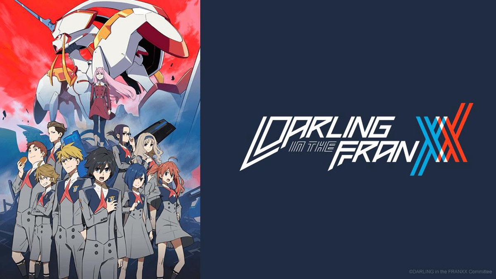

"Darling in the FranXX" is a sci-fi anime series set in a dystopian future where humanity is on the brink of extinction due to large creatures known as Klaxosaurs. The remaining human population resides in massive mobile fortresses called Plantations, where children are raised to become pilots of FranXX, giant mecha robots.
The story follows Hiro, a former prodigious pilot who has lost his motivation, and Zero Two, a mysterious and powerful Half-Klaxosaur girl with a reputation as the "Partner Killer." They form an unlikely partnership and become the central focus of the series. As Hiro and Zero Two pilot their FranXX, they uncover secrets about the origins of the Klaxosaurs, the true nature of their society, and the purpose of their existence.
The series explores themes of identity, love, sexuality, and the search for meaning in a post-apocalyptic world. It delves into complex relationships among the characters, including the other members of Squad 13, who are also pilots. The dynamics of friendship, romance, and teamwork are key elements throughout the story.
As the plot unfolds, the characters face internal and external conflicts, challenging their beliefs and forcing them to confront their fears. They discover the importance of individuality and free will in a society that values conformity and control.
"Darling in the FranXX" combines action-packed mecha battles with emotional character development, exploring the depths of human emotions and the significance of human connections in a world threatened by destruction.
